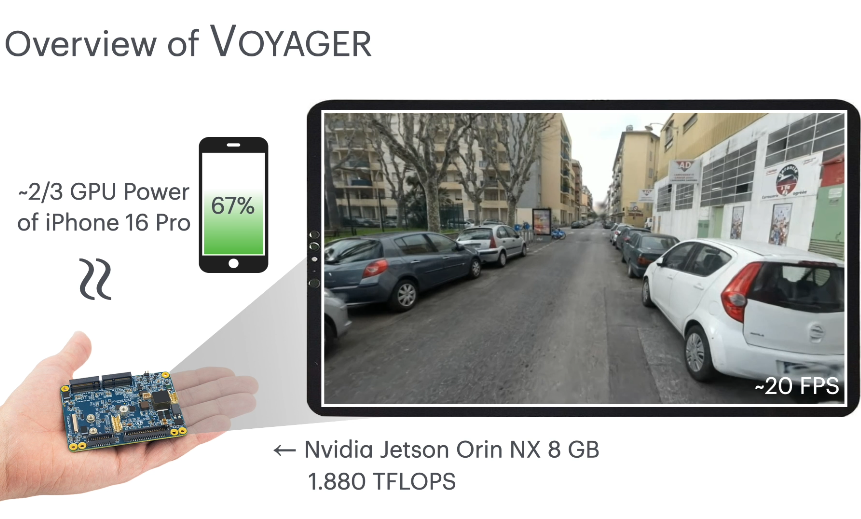
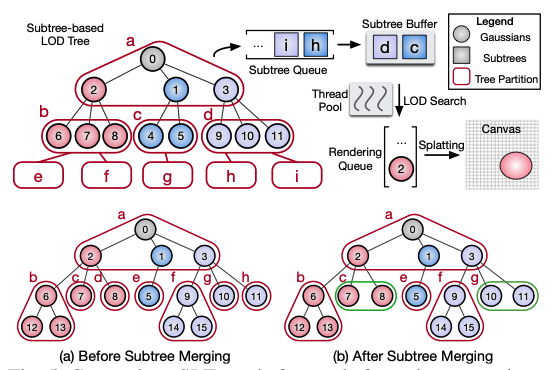
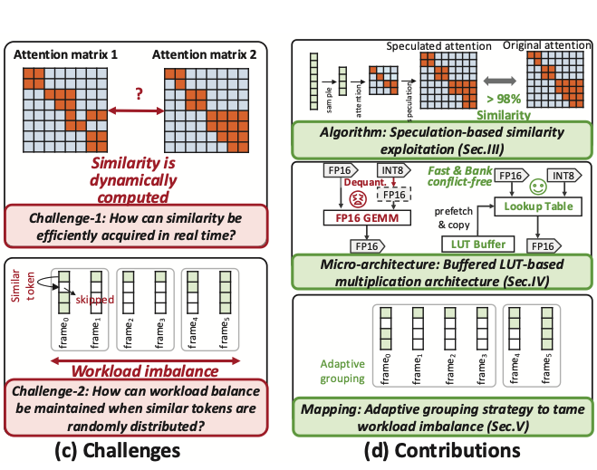

Xingzhi Qi
Contact:
brucelee_sjtu (AT) sjtu (dot) edu (dot) cn
About Me
Hello! I am a senior undergraduate student in the John Hopcroft Honors Class (Zhiyuan College) at Shanghai Jiao Tong University, majoring in Computer Science.
I am currently interested in AI for Math, Autoformalization and Formal Verification.
I am fortunate to work on research projects advised by Prof. Wenda Li, Prof. Qinxiang Cao, and Prof. Junchi Yan.
💡 Let's see our recent work: [NeurIPS'25] Radial Attention, featuring O(nlogn) Sparse Attention for training/inference acceleration of video diffusion models! Feel free to try it with the official implementation or on the state-of-the-art WanVideo inference engine.
News [Show All]
- [2025/09] "Radial Attention: O(nlogn) Sparse Attention with Energy Decay for Long Video Generation" is accepted to NeurIPS'25.
- [2025/09] I gave a talk about Radial Attention and Nunchaku at UW Systems Lab, hosted by Prof. Baris Kasikci.
- [2025/07] I started my on-site research internship at MIT HAN Lab in MIT. Feel free to reach out!
- [2025/07] "SLTarch: Towards Scalable Point-Based Neural Rendering by Taming Workload Imbalance and Memory Irregularity" is accepted to ICCAD'25.
- [2025/04] "Our final paper of the course Computer Vision KETA: Kinematic-Phrases-Enhanced Text-to-Motion Generation via Fine-grained Alignment" is accepted to IJCNN'25.
Education


{kind=link}
Selected Publications
* indicates equal contribution

|
Radial Attention: O(nlogn) Sparse Attention with Energy Decay for Long Video Generation
|
|  |
Voyager: Real-Time Splatting City-Scale 3D Gaussians on Resource-Constrained Mobile Devices
|
|  |
SLTarch: Towards Scalable Point-Based Neural Rendering by Taming Workload Imbalance and Memory Irregularity
ICCAD 2025 (Oral Presentation) /
arXiv
|
|  |
Harnessing Conventional Video Processing Insights for Emerging 3D Video Generation Models: A Comprehensive Attention-aware Way
DAC 2025 (Oral Presentation) /
PDF
|
Teaching Experience
- Teaching Assistant for Machine Learning (02/2025 – 06/2025)
- Teaching Assistant for Mathematical Logic (02/2024 – 06/2024)
- Teaching Assistant for Programming (09/2023 – 02/2024)
Role: giving lectures and recitation classes, writing documents and sample solutions, grading homework, creating exam questions, designing machine learning related final project lists
Honors & Awards
- 2025 SenseTime Scholarship (30 winners nationwide with aspiration in AI research)
- 2024 Commercial Sponsorship Scholarship (14 winners each year in SJTU)
- 2023 Longfor Merit Scholarship (Top 10 at Zhiyuan College, SJTU)
- 2022-2025 Zhiyuan Honorary Scholarship (Top 2% in SJTU)
- 2023-2025 Academic Excellence Scholarship (Ranked top-5 each year in ACM Class of 2026)
Miscellaneous
- Tenor in SJTU Student Choir, won first prize in National College Students' Art Performance and two gold medals in World Choir Games 2024, and a quite widespread Zhi-Yin-Ni-Tai-Mei variation on Bilibili.
- Football enthusiast and team captain, led ACMClass2022 to win department championship three times in a row.
{kind=link}
{kind=link}
{kind=link}